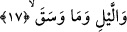

fazladır. Kelime kalp inceliği demek olan şefkat kelimesinden türemedir. Kuşkusuz
güneş ışınları da güneşin kaybolmasından itibaren gecenin karanlığının bütün ufka
çöktüğü ana kadar incelmeye ve zayıflamaya başlar.
İkrime ve Mücahid’in görüşüne göre “şafak” gün demektir. Çünkü şafak güneşin
eseri demektir. Güneş ise bilindiği üzere gündüz gezegeni olup onun eseri gündüzdür.
Buna göre bu âyette hem gündüzün hem de gecenin üzerine yemin edilmiş oluyor.
Bunlardan birisi insanın geçimini sağlama zamanı, diğeri ise sükûn ve istirahat
zamanıdır. Dünya işleri bu ikisine dayanılarak yapılır.
Müfredat’ta ifâde edildiğine göre; “şafak” gün ışığının güneşin batması esnasında,
gecenin karanlığıyla birbirine karışması demektir.
Kâşânî ise bu âyetleri şöyle tefsir ediyor: “Şafağa yemin ederim” yâni nefsin
zulmetiyle karışmış beden ufkunda nuriyyetin batıp kaybolmasından sonra insan
fıtratından geride kalan nuriyyet üzerine yemin ederim. Allah Teâlâ bu nuriyyeti,
dereceler içerisinde yükselme ve kemali kazanma imkanı dolayısıyla üzerine yemin
etmek sûretiyle ta’zim ediyor.
et-Te’vilâtü’n-Necmiyye’de okuduğumuz âyetten şu işâretler çıkarılıyor: Bu âyet
Allah Teâlâ’nın şafak üzerine yemin ettiğine işâret ediyor. Çünkü şafak hakîkî ve zâtî
vahdetin zuhûr ettiği, nisbi ve esmâ-i kesretin ortaya çıktığı yerdir. Bu şöyle olur: Şafak
vahdet gecesinin karanlığı ile kesret gündüzünün beyazlığı arasında hakîkî bir berzahtır.
Berzah bilindiği üzere iki şey arasındaki engel demektir. Berzahın mutlaka engel olduğu
iki şeyden kuvvet alması gerekir. Böylece berzah vahdet ve kesret hükmünü kendi
zatında birleştirmiş olur. Öyleyse böyle bir birleştirici üzerine yemin etmek lâyıktır.
Gecenin vahdetin mazharı; yâni zuhûr ettiği yer kabul edilmesi hissedilen ve görülen
herşeyin vahdetin hakikatinde taayyünatın istihlâki gibi olmasından dolayıdır. Ayrıca;
“Biz geceyi bir örtü yaptık.” (Nebe 78/10) âyet-i kerimesi de buna işâret etmektedir.
Çünkü gece, karanlığıyla eşyayı örtmektedir. Onu izleyen âyette ise “gündüzü de
çalışıp kazanma zamanı kıldık.” (Nebe 78/11) buyurulmaktadır. Bunun anlamı ise
gündüzü, içerisinde eşya zuhûr ettiği için kesretin mazharı kıldık demektir. Çünkü
gündüz, bir çok şey zâhir oluyor.
17. Geceye ve onda basan karanlığa,
Âyetin bir diğer anlamı, “Geceye ve içinde topladıklarına” şeklindedir. Zira Rağıb
Isfahânî’nin ifâdesine göre “el-vesk” dağınık şeyleri toplamak, bir araya getirmek
demektir. Buna göre Allah Teâlâ şöyle demiş oluyor: Ben geceye ve onun
topladıklarına, bağrına bastıklarına, karanlığı ile örttüklerine yemin ederim.
“Veseka” fiilinin “topladı” anlamına göre âyetteki “mâ” harfi geceleri biraraya gelen